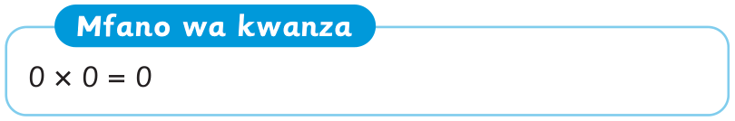
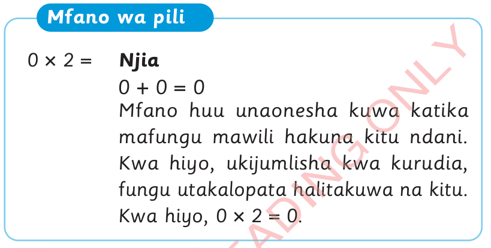
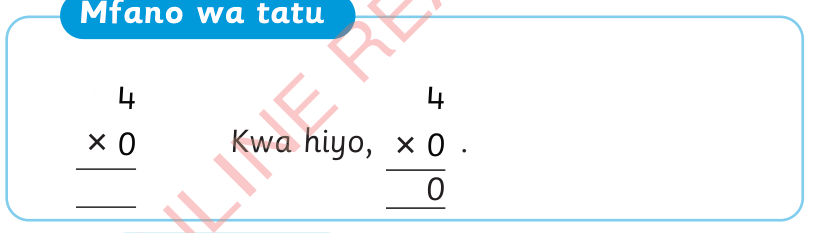

Mfano wa kwanza

Mfano wa pili
Njia
0 + 0 = 0
Mfano huu unaonesha kuwa katika mafungu mawili hakuna kitu ndani.
Kwa hiyo, ukijumlisha kwa kurudia, fungu utakalopata halitakuwa na kitu.
Kwa hiyo, 0 × 2 = 0.

Mfano wa tatu
4
Kwa hiyo,
0
.